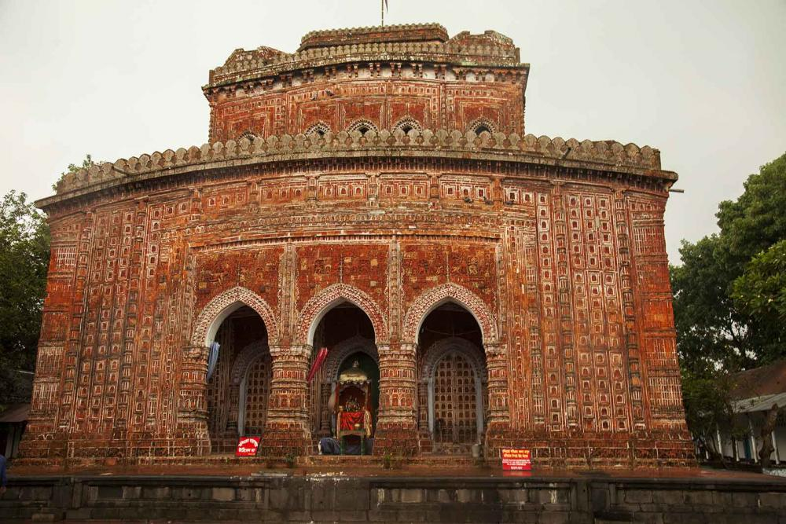
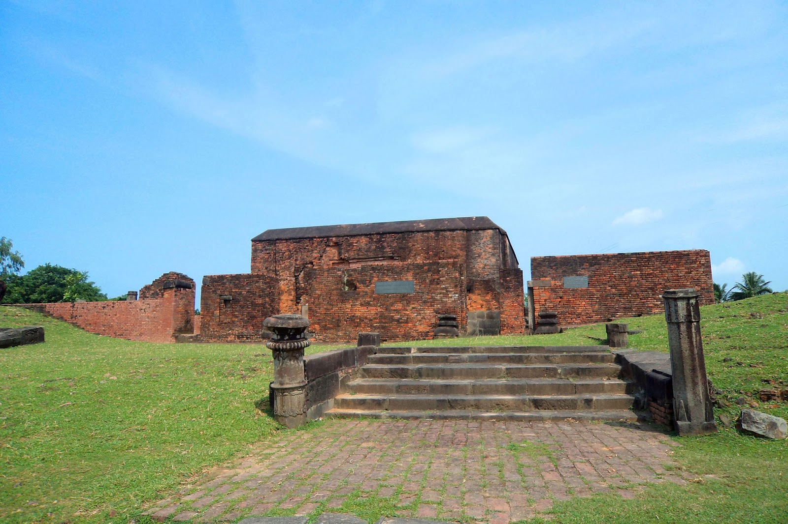
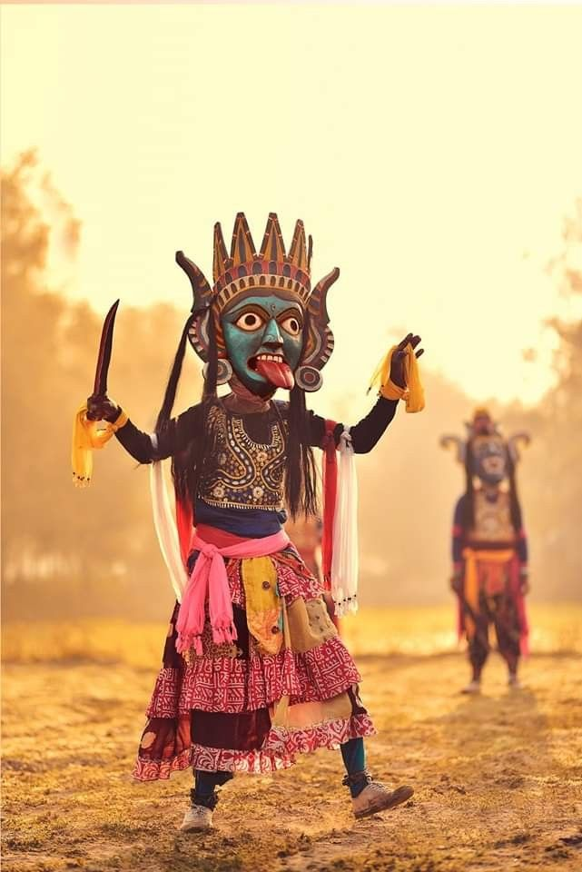
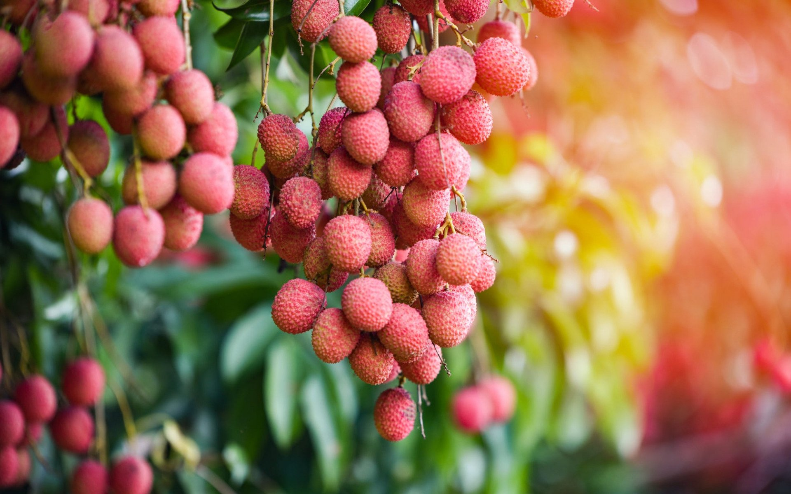
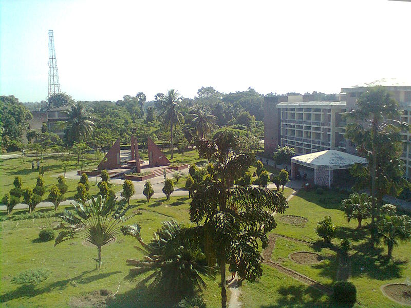
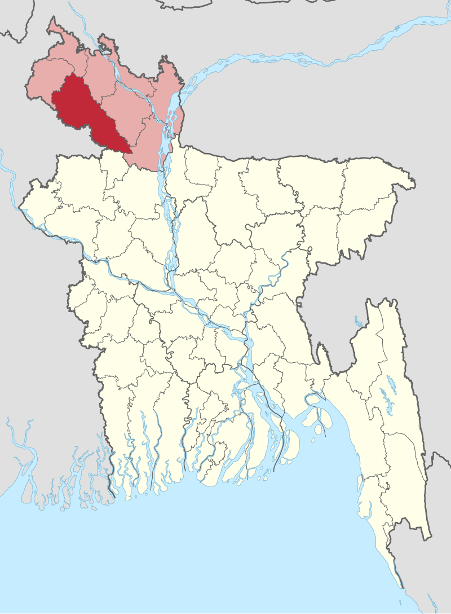

History of Dinajpur
Dinajpur is one of the oldest districts in Bangladesh. It is rich in natural beauty, temples, and historical landmarks. Dinajpur was a city of palaces and landlords, with many ancient architectural and cultural sites.
Tourist Attractions
Dinajpur is home to Kantajew Temple, Ramsagar Lake, Nayabad Mosque, Swapnopuri Park, and the Chehelgazi Mausoleum, among other popular tourist spots.
Culture
Dinajpur hosts a diverse range of ethnic communities, each preserving its own unique culture and traditions. Festivals like Boishakhi Mela and various religious and social events are part of Dinajpur's rich cultural heritage.
Food
Dinajpur is famous for its Katari Bhog rice, lychees, traditional sweets, and delicious pithas.
Education
Dinajpur has notable educational institutions, including Dinajpur Government College and Hajee Mohammad Danesh Science and Technology University (HSTU).
Economy
Dinajpur's economy is primarily agriculture-based. The district is well known for its rice, lychees, mangoes, and other fruits. Several industries also contribute to its economy.
Contact
Dinajpur is well connected by rail, road, and air. Trains and buses are easily available from Dhaka.